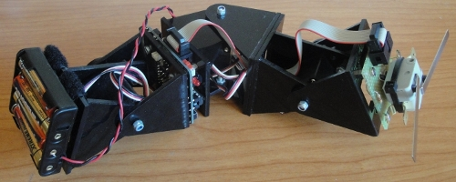
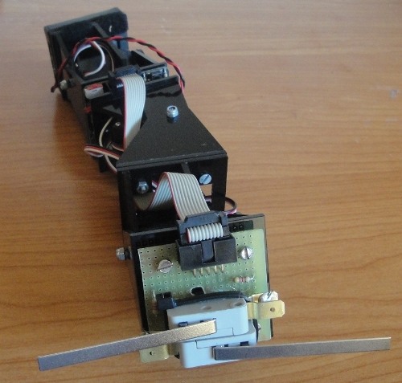
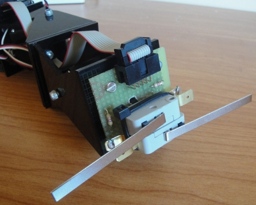

Ahora que la locomoción de los robots ápodos ya está controlada,
es hora de empezar a
programar comportamientos. En colaboración con Fernando Herrero,
Pablo Varona y
Francisco de Borja del
grupo de Neurocomputación Biológica
de la Universidad Autónoma de Madrid, estamos construyendo un prototipo para este fin.

Este es el primer prototipo. Es un Minicube-II de 3 módulos Y1 (de plástico) al que se le ha añadido una placa en la cabeza con dos sensores de contacto (bumpers). El primer comportamiento a programar es el de evitar obstáculos.

En esta foto se muestran los bumpers con más detalle. Se conectan a la tarjeta Skycube por medio de un cable de bus.
De momento sólo tenemos construido el robot. Ahora toca programar y experimentar.
Si le cambias los bumpers por unos sensores de luz tienes un siguelineas para la robotrackers… 😉
Quiero mi 10% del premio 😛
Que chulo *_* tengo ya ganas de que pongas un video para verlo en acción.
Aunque me temo que tal y como están puestos esos bumpers no le permitirían hacer el movimiento lateral, que a mi me encantaba…
Ya solo por dejar volar la imaginación un poco. ¿Te imaginas colocarle una piel con sensores que lo recubra? Algo barato sería ponerle sensores caseros como los que hace esta chica: http://www.instructables.com/member/Plusea/ En especial este, que me parece espectacular: http://www.instructables.com/id/Stroke-Sensor/ Aunque probablemente no tenga tanta utilidad como otros. Además de ser muy tedioso de fabricar.
Hola piraña,
jjajjajj. Primero probaremos comportamientos con los bumpers y luego iremos cambiando los sensores a ver quñe se puede hacer…
Hola Garred,
Gracias! Me alegro de que te guste. El movimiento lateral y de rotación sí los puede hacer, pero es cierto que el de rodar ahora no es posible. Cambiando los bumpers por infrarrojos es una opción muy interesante. De momento queremos desarrollar el software.
Los sensores de tacto que has refernciado… SON IMPRESIONANTES!! No los conocía!!!! Estamos evaluando sensores capacitivos para hacer una especie de piel artificial discreta (anillos de tacto):
Robot-modular-serpiente-para-busqueda-y-rescate-en-zonas-catastroficas/
Muchas gracias por la info 😀